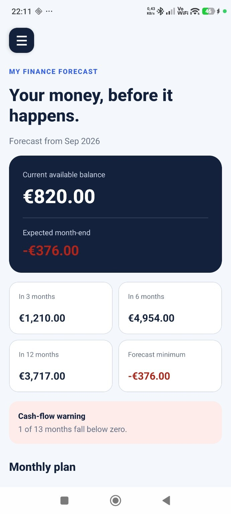
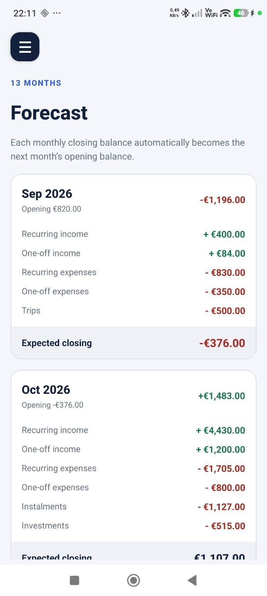
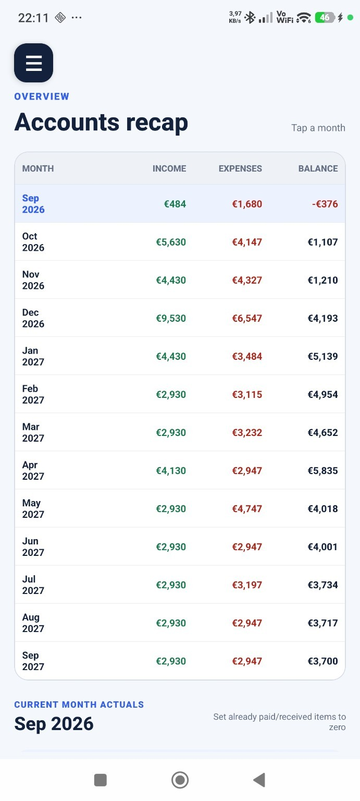
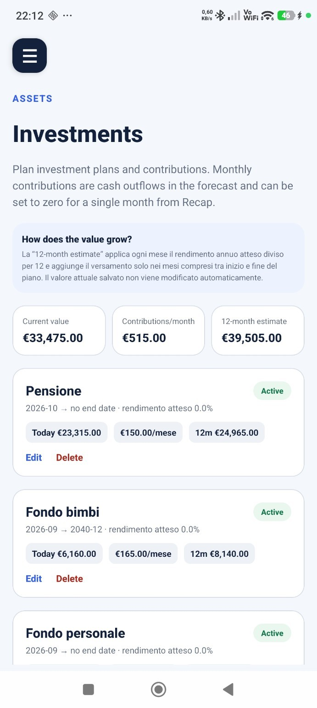
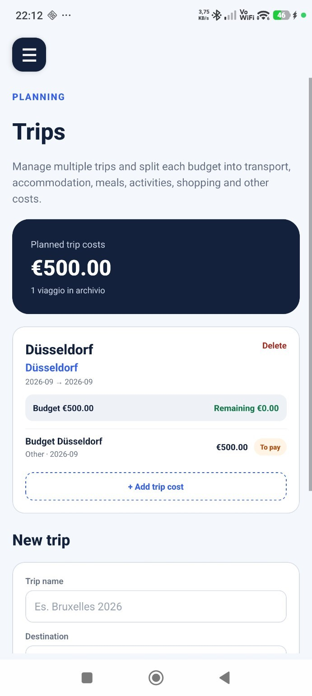
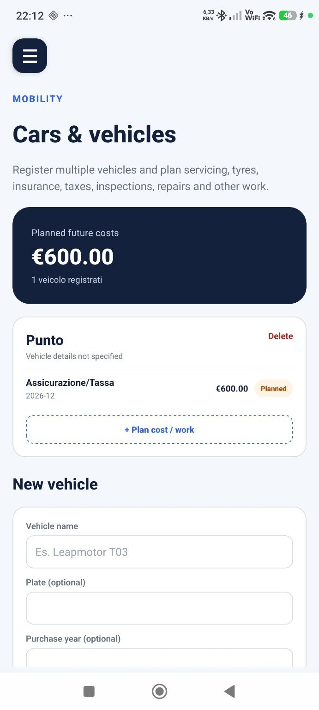

OFFICIAL PRESS KIT · ANDROID
My Finance Forecast
An Android personal finance app for budgeting, monthly recap and forward-looking cash-flow forecasts, with trips, vehicles and investment planning.
Product facts
LuSor Games
Android
Personal finance and budgeting app
Open listing
Short description
An Android personal finance app for budgeting, monthly recap and forward-looking cash-flow forecasts, with trips, vehicles and investment planning.
Extended description
My Finance Forecast helps people organize income, expenses and commitments, then review a forward-looking monthly cash-flow plan. It includes recurring and one-off movements, loans, trips, vehicle costs, investments, monthly recap and spreadsheet import/export. It does not provide automatic bank synchronization or financial or investment advice.
Key features
- Plan income, expenses and recurring commitments
- Review projected month-end balance and future cash flow
- Track loans, investments, trips and vehicle costs
- Import and export financial data with spreadsheet support
Screenshots












Images are served from the public LuSor Games promotion-assets repository. Click an image to view it full size.